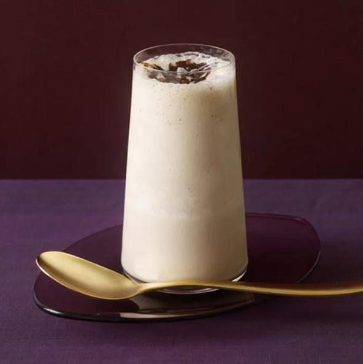

Bourbon Chocolate Milkshake

Description
The best part of growing up might be this Bourbon, Vanilla & Chocolate Milkshake,
which combines three of your favorite things in one glass. It walks the line between
dessert and cocktail and should be enough to satisfy any sweet tooth.
The recipe serves four people, so grab some friends and whip up a batch in the blender.
It’s a fun and unexpected treat when enjoyed after dinner or at your next backyard barbecue.
Ingredients
- 6 ounces bourbon
- 3 cups premium vanilla ice cream
- 1 1/2 cups whole milk
- 6 tablespoons chocolate syrup, divided
Steps
- Place four heavy pint glasses in the freezer to chill for 30 minutes.
-
Add the bourbon, ice cream, milk, and four tablespoons of the chocolate syrup to a
powerful blender.
-
Add three ice cubes, and blend until smooth. (If the mixture seems too thin, add
another 1/4 to 1/2 cup of ice cream and blend again.)
-
Divide evenly among the prepared pint glasses, and top each with 1/2 tablespoon of
the remaining chocolate syrup.
- Serve immediately